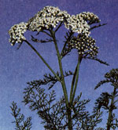
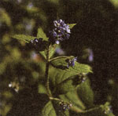
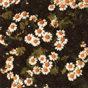
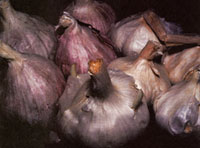

Safe Homegrown Pesticides
You can rid your garden of many destructive pests with effective natural remedies, including pyrethrum, garlic, feverfew, marigolds and moles, moderation is the key.
By Diane Downs
July/August 1986
From Mother Nos. 62 and 70
You can rid your garden of many destructive pests with effective natural remedies.
Few experiences are more frustrating, more irritating, or more just plain maddening than suffering an invasion of creeping, crawling, or flying garden pests. And the situation can get even worse when you start looking for a way to solve your bug problems. Here, for instance, is a sample of the kind of "reassurance" you can find on a typical pesticide can, box, or bottle label: CAUTION! HARMFUL TO HUMANS, PETS, AND LIVESTOCK. DO NOT INHALE OR LET PRODUCT COME IN CONTACT WITH SKIN. DO NOT USE VEGETABLES TREATED WITH THIS PRODUCT FOR ONE WEEK AFTER APPLICATION . . . etc., etc., etc.
Fortunately, there is a way to have healthy crops without handling poisons . . . and that's to grow your own safe insecticides! Over the ages many pungent herbs have served man as natural pest repellents. Such homegrown protective agents were used effectively long before the present chemical craze, and they still work.
Pyrethrum
One of the better-known organic pesticides is pyrethrum (Chrysanthemum cinerariaefolium or Chrysanthemum coccineum). I find it best to grow my supply rather than buying any, though; some commercial products labeled "pyrethrum dust" are simply a pyrethrum powder base that's laced with those toxic, residual poisons characteristic of today's overkill pest control philosophy.
The pyrethrum plants, also known as painted daisies or painted ladies, provide pest-repellent action when grown either throughout your garden or as border plants.
On the other hand, if you want to treat a localized infested area, you can pick, dry, and crush the flowers' petals to make your own safe pyrethrum dust. Or, as an alternative, make a strong "tea" of the powder and spray it directly on the insects. Remember: Pyrethrum is not residual . . . but it is toxic to soft-bodied insects (aphids, etc.) and to some cold-blooded vertebrates on contact. The dust is nontoxic to you, your livestock, and your pets, however . . . and can even be used as a safe flea powder.
Garlic
Widely known for its aroma, garlic will turn away more than a few garden invaders. When interplanted throughout your plot, berry patch, or orchard, this ancient herb will help scare off Japanese beetles, aphids, and other annoying insects. (If you fear that such widespread planting will produce too much garlic for one homestead, bear this in mind: As always, there's nothing like homegrown . . . and the aromatic plant has innumerable applications for year-round culinary and medicinal use. For example, it can rebuff such beasties as mosquitoes, ticks, and intestinal worms.)
To make a great bug-chasing spray for plants, just blend crushed garlic with water (experiment with different concentrations till you find the strength that works for you), let it soak, and spray the strained liquid on the gnawing invaders that play havoc with your garden. (If you need an extra- strong spray, add some cayenne to the basic mixture.)
Feverfew
Feverfew (Chrysanthemum parthenium or Pyrethrum par thenium)- a relative of pyrethrum that was used in the old days to help reduce fever-is also a mild insect repellent. Though the daisylike flowers are beautiful, their bitter aroma repels pests from nearby vegetables. (That's how most pesticide plants work: When intermingled with crops, they emit a disagreeable odor which deceives insects into thinking that nothing edible is growing in the area.)
Marigolds and Moles
Mexican marigolds (Tagetes minuta), African marigolds (Tagetes erecta), and pot marigolds (Calendula officinalis) are especially effective garden protectors (be sure, however, not to grow the "new, improved" no-scent varieties). Scatter the flowering plants through your brassicas-cabbage, cauliflower, broccoli, brussels sprouts, etc.-for bugless crops that are also free of nasty nematodes. (It's best to start the marigolds indoors early-right when you start those brassicas.)
What's more, the Mexican variety apparently exudes a substance from its roots that's actually toxic to certain invasive weeds! Try sowing the potent flowers as a cover crop this autumn. Then, when next year's planting time rolls around, the posies can be turned under for one of the finest, most soil-cleansing green manure crops your ground could hope for. Tagetes minuta is also repellent to rabbits. So be extravagant with the flowers. Scatter them throughout your orchard . . . surround your roses with them . . . and use some of the foliage to brew up a tea to spray localized pest-infestations.
If your midsummer plot is under attack by any belowground burrowers, you might plan to have a few mole plants (Euphorbia lathyris) growing around the edges of your garden next time around. The exotic-looking biennials with their milky, latexlike sap have long been known as mole and gopher deterrents . . . and they'll sow themselves the second year, providing you with seedlings to place in other trouble spots.
For Squash, Tomatoes, and More
To guard your maturing cucumbers and squash, border them with orange nasturtiums (Tropaeolum mafus). Then further guard them by strewing discarded onion skins across the top of each hill (to deter cucumber beetles) or by spraying a mix of equal parts of wood ashes and hydrated lime in water on the upper and lower surfaces of the spreading foliage.
Early in the year, you can fortify your future tomato territory by sowing dill (Anethum graveolens) and borage (Borago officinalis) to repel hornworms. Needless to say, you'll enjoy these two useful and flavorful herbs for themselves, as well as for their ability to protect your tomato crop from invasion.
If Japanese beetles appear to be your pri mary enemy, plan to plant castor beans (Ricinus communis. . . but warn youngsters that the bean seeds are poisonous), white-flowering geraniums, zinnias, and garlic throughout your garden area next year.
For more general-purpose garden guarding, consider the roadside herb, yarrow (Achillea millefolium). It not only repels a number of pests, but is commonly believed to enhance the growth and flavor of plants growing nearby. Furthermore, Achillea's friendly qualities can be utilized through the year if you simply brew the foliage into a liquid fertilizer and water periodically with the tea.
When your cole-family vegetables face an invasion of cabbage moths and their larvae (which can mutilate plants in a few short days), simply pour soured milk over the young cabbages, etc., to keep the moths aloft and the worms away.
Your special, tender greenhouse tenants need protection, too, so always allow a few shoo-fly plants (Nicandra physalodes) to occupy several places of honor in your solarium. The attractive, fast-growing annuals are toxic to all pests that chew them, and rebuff the whiteflies that often plague enclosed gardens. (Garlic sprays deter indoor aphids.)
Some herbs repel non-garden pests. Pennyroyal (Mentha pulegium) deters mosquitoes, ticks, and fleas (I stuff cloth tubes with pennyroyal to make flea collars for our pets). Tansy (Tanacetum vulgare) can, if planted by your doorstep, discourage ants from entering your home. Dried leaves of sweet woodruff (Asperula odorata) spread throughout your boxes of stored woolens will repel moths. And a bunch of tansy or sweet woodruff hung in your dwelling or barn will help keep flies away.
Moderation in All Things
The list of beneficial garden plants goes on and on: Nasturtiums scare off bean beetles and aphids . . . horseradish will guard your potato patch . . . sage, catnip, thyme, and rosemary deter the cabbage moth (as does mint, which is generally helpful to cabbage) . . . and chives ward off aphids.
The alkaloid exudates from nearly every type of tomato foliage will deter aphids . . . stinging nettle (Urtica dioica) spray encourages healthier plants . . . chamomile tea protects new seedlings from "damping off" . . . a turnip or anise mist will rid your crops of spider mites and aphids . . . and basil spray discourages flies (mass plantings of the herb around a porch or patio will serve to keep the insects from such areas).
Even as you put such organic pesticides to use, though, keep in mind that an insect pest or two here and there will not pose a threat to your growing grounds. In small numbers the invaders simply provide food for their natural predators, such as swallows . . . each of whom may consume 2,000 insects a day! In fact, Mother Nature maintained a precious and delicate balance long before we decided to intervene. It's the duty of every concerned gardener to respect that balance, and to use repellents-even natural ones-only when populations of pests threaten to become excessive.
EDITOR'S NOTE: Author Diane Downs sells most of the plants listed in this article, plus some 150 varieties of live herb plants, herb seeds, and herbal products. For a listing, send $1.00 and a self-addressed, stamped envelope to Lost Prairie Herb Farm, Star Route, Marion, MT 59925.
|
 Yarrow can be used as a tea to treat crops. |
 Flea collars made of pennyroyal are nontoxic. |
 Borage and feverfew are potent pesticides. |
|
 Garlic is the king of the homegrown pest controls, and a useful herb around the kitchen, too. |
 Nasturtiums provide pest control, and the leaves and blooms are edible. |
|